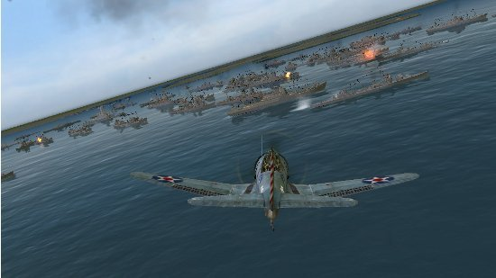
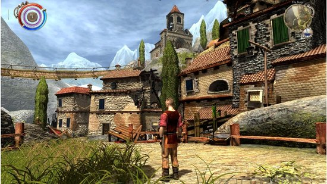
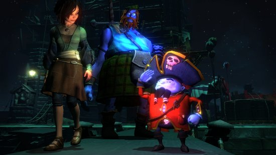

Oct 14, 2010 · 5 minute read · Comments
Hobbies

Durante las últimas semanas hemos asistido al anual y entrañable debate mediático que protagonizan el FIFA y el Pro Evolution Soccer de turno. Los medios de mayor tamaño ya han dado su veredicto gracias a sus fantabulosas copias promocionales pero eso no quiere decir que yo no pueda hablar de lo que me venga en gana aquí, en mi pequeño cuchitril. La pregunta es, ¿merece la pena dejarse los billetes en una nueva entrega? Sinceramente, no lo tengo muy claro, a cambio les ofrezco mi opinión por si les ayuda a formarse una propia.

Mayor nivel de exigencia
Cogemos el mando, seleccionamos un partido rápido y lo primero que notamos es el nuevo sistema de pases (“Pro Passing” para los más pijos). Estaremos obligados a calcular tanto la dirección como la potencia con un alto grado de exactitud si no queremos errar estrepitosamente. En FIFA 10 recuerdo que, aunque todos los ajustes estuvieran en manual, el sistema corregía errores ligeros en la dirección de los pases. Hilar jugadas nunca había sido tan complejo pero en, última instancia, la satisfacción es mucho mayor.
En el terreno de la inteligencia artificial encontramos luces y sombras. He notado que la defensa enemiga está muy bien organizada y nos lo pone difícil a la hora de abrirnos paso. Por otro lado, en muchas ocasiones esta situación se produce porque nuestros compañeros son un poco torpes buscando los puntos débiles del contrario. Más de una vez me hubiera gustado que un compañero se adelantase o fuera en una determinada dirección, con la consiguiente dosis de frustración. En cualquier caso, estos “fallos de comunicación” se producen incluso en la vida real.
En los modos de dificultad más altos el asunto se pone serio y se producen situaciones bastante ridículas. Incluso diría que no es la IA la que mejora sino son nuestros jugadores los que han vuelto a la cantera. Para mí no es un asunto de mayor importancia, ya que el mayor número de horas las dedico al modo online con desconocidos o en ligas de amigos.

Rozando el realismo
Todos los años vuelve la cantinela de la “mayor fluidez de juego” pero es la pura verdad. Se nota como el número de animaciones crece considerablemente consiguiendo que los jugadores reaccionen de forma más natural ante cargas contrarias, controles de balón “in extremis” o cambios de dirección. Si bien no afecta de forma directa a la jugabilidad, hace más agradable los partidos.
FIFA siempre ha fallado en el juego aéreo, rematar un córner era más bien cuestión de suerte que de habilidad. Los jugadores se quedaban como pasmarotes en el área esperando que les llegara el balón sin apenas luchar por él. En las dos últimas entregas se ha mejorado hasta alcanzar el aprobado. Por fin la envergadura de los jugadores gana importancia y es palpable como se lanzan encima del oponente para dar el golpe de gracia.

El techo generacional
Llevamos un número considerable de entregas de simuladores futbolísticos en la actual generación. Se han mejorados gráficos, pulido las físicas y añadido modos de juego. Muy a nuestro pesar, la curva no es exponencial, siendo los cambios más discretos a cada año que pasa. El texturizado de los rostros va cogiendo tufillo junto con el motor gráfico en general. ¿Veremos un nuevo engine en esta generación? A pesar de vender más de 2 millones de unidades durante su primer fin de semana, EA no está para tirar cohetes y mucho menos para arriesgar con una de sus apuestas seguras.
Sinceramente, llegados a este punto dudo que en las próximas apariciones de FIFA veamos algo más que una actualización de plantillas. Atención, ojalá me equivoque pero mi bola de vidente me indica que tendremos que esperar a la próxima remesa de consolas (mejor no hablar de la versión de PC).

Parando balones
La posibilidad de controlar al portero tanto en partidas online como individuales se añade a la ingente cantidad de modos de juego. Sin duda, una de las novedades más cacareadas. Desde la retaguardia veremos como se desarrolla la acción hasta que tengamos que defender la portería de un ataque oponente. Hay que reconocer que las mecánicas de este modo están muy trabajadas y resultan curiosas. Medir los tiempos y tomar la decisión de buscar el pie del delantero antes de que dispare son habilidades que se adquieren con la práctica.
¿Mi opinión? No pasa de ser una mera anécdota que, ni de lejos, funcionará en red. Todos sabemos la fauna de trolls que pueblan los servidores de EA, si ya era complicado disfrutar un 10 vs 10, el añadido de los porteros hace injugables estos encuentros. En compañía física o en el modo “Conviértete en profesional” cobra sentido pero no más allá.

Muy bonito pero, ¿merece la pena?
Los verdaderos acérrimos no estarán leyendo esto, estarán enganchados sin remedio al online de FIFA 11. Aquellos que no tengan las entregas anteriores y estén decididos a adquirir un simulador del deporte rey, deberían hacerse con este titulazo. El simpatizante de la saga que posea la edición 2010 debe saber que no encontrará una grandiosa mejora pero agradecerá los cambios. Sé que puede parecer abusivo pasar por caja cada 12 meses pero utilizando la importación (la versión UK está completamente en castellano) y echándole horas se amortiza rápidamente.
De nuevo, FIFA demuestra estar a la altura pero será necesario una evolución cualitativa dentro de poco si no quiere quedarse obsoleto y estancado. Bueno, les dejo que me voy a echar un España-Holanda.
Oct 12, 2010 · 2 minute read · Comments
Hobbies

No me gusta informarme en exceso sobre las películas que voy a ver, la mayoría de los trailers revientan casi la totalidad del metraje y prefiero que las buenas obras me pillen por sorpresa, desarmado y sin ideas preconcebidas. Por eso salí de Buried en una especie de shock mientras comentaba mis impresiones a medio forjar con mis amigos y es que la película no es para menos.
Paul Conroy se despierta aturdido en medio de la oscuridad, apenas recuerda lo que ha sucedido y todo es muy confuso. La respiración se le acelera mientras el espectador comienza a inquietarse conectando, desde el comienzo, con sus sensaciones. Poco a poco recupera el sentido y descubre, horrorizado, que se encuentra dentro de un ataúd a una distancia indeterminada de la superficie. Sus únicas armas para salir serán un mechero, un móvil en árabe con escasa batería y poco más. No puedo contar nada más sobre este ejercicio de claustrofobia y puesta al límite del aguante humano.
El hecho de que la película no aburra y mantenga la tensión durante sus 100 minutos de duración blandiendo como armas un único personaje y decorado (si se le puede llamar así) nos indica que estamos ante algo especial. A medida que los motivos del encierro del protagonista se van despejando nuestra empatía crece hasta llegar a puntos en los que los más claustrofóbicos tendrán serios problemas para permanecer en la sala. Pasamos por momentos de esperanza, frustración, y verdadera rabia ante los que se nos pondrán los pelos de punta.
Más allá de la ansiedad que produce el encierro del protagonista se tratan otros temas de forma transversal como la frialdad del ser humano ante el dolor ajeno, el egoísmo por salvar el culo cueste lo que cueste o la política de los gobiernos ante la petición de rescates y la toma de rehenes. Parece mentira que todo este contenido quepa en un simple ataúd en el que escasea el oxígeno.
Por supuesto, recomiendo esta coproducción española y australiana de presupuesto mínimo (menos de dos millones de dólares). Su director, Rodrigo Cortés, demuestra que se puede hacer cine español de calidad y dejar de hablar de prostitutas, homosexuales y drogas. Espero que con películas como Ágora, Celda 211, El Laberinto del Fauno y otras muchas mejore la mala reputación que tiene nuestro cine incluso en nuestro país.
Lleven sus mascarillas de oxígeno a la sala y algunas pastillas contra la ansiedad porque las necesitarán.
Oct 12, 2010 · 2 minute read · Comments
Games development

No hay más que mirar la lista de proyectos inscritos en el CUSL V para percatarse que los participantes de Cádiz tenemos especial predilección por los videojuegos. XLand, Balloon Breakers y, por supuesto, IberOgre. Incluso espero que aún se presenten algunos más. En esta ocasión voy a hablar de Balloon Breakers, del compañero Jesús González Rodríguez, por utilizar Ogre3D como motor de renderizado y porque el autobombo local nunca está de más.
Balloon Breakers es una reinvención del clásico Pang llevándolo al mundo de las 3D de la mano de Ogre. Aún lejos de estar terminado ya podemos ver en el blog oficial al protagonista campando por el escenario a sus anchas (que no es poco) y a algunos secundarios como un tucán o un ermitaño. Su estilo cartoon es de lo más acertado y encaja a la perfección con el espíritu arcade del Pang de toda la vida.

Un proyecto de lo más interesante para estudiar gestión de escenas y detección de colisiones sencillas entre otros aspectos. Sin duda promete mucho y estoy seguro de que será uno de los competidores de cara a la fase local y nacional.
He aprovechado para colocar una sección de enlaces a blogs de participantes del V CUSL en la barra lateral. Espero que se presenten algunos proyectos más antes de que acabe el plazo pero por lo que he visto no faltan ideas realmente curiosas.
Oct 11, 2010 · 2 minute read · Comments
Games development
Mi motivación con respecto al proyecto ha ganado enteros durante los últimos días ya que, en contra de todas mis previsiones a medio plazo, ya hay gente interesada en IberOgre. No sólo como lectores sino como colaboradores activos lo cual considero realmente importante. Jamás hubiera pensado que IberOgre pudiese atraer participantes en una fase tan temprana de su desarrollo (pocos se suben a un barco que no está casi terminado).
Alberto Cejas, compañero de carrera y con un proyecto entre manos relacionado con los videojuegos y Ogre3D ha redactado un artículo titulado “Conceptos Generales” en el que habla sobre la arquitectura y el diseño de nuestro engine de renderizado. Esto lo convierte en el primer colaborador en publicar un artículo en la wiki, espero que sea el primero de muchos. Le estoy muy agradecido y espero que siga aportando artículos tan buenos como este.
La importancia de Twitter como herramienta para difundir proyectos ha quedado patente en este caso. Gracias a la cuenta oficial de IberOgre y la mía personal hemos aparecido como usuarios recomendados a gente interesada en el mundo de las 3D. A partir de ahí han surgido lectores como @spectrumgomas que han pedido artículos nuevos, hecho correcciones y aportado ideas. El compañero @che1404 incluso se ha ofrecido a escribir, a lo que he aceptado rápidamente (no vaya a ser que se arrepienta). Estos usuarios, a su vez, han retwiteado mensajes o recomendado la wiki a otros muchos. Por todo esto, infinitas gracias.
Espero que algún día se pueda formar una pequeña comunidad de desarrolladores de videojuegos 3D entorno a IberOgre y que aporten sus conocimientos. Puede que sea una utopía pero muestras de interés como la de los últimos días animan a seguir adelante.
Oct 10, 2010 · 4 minute read · Comments
Games development

Antes de decidirme a utilizar Ogre frente a otros motores de renderizado (Irrlicht) o incluso motores de juego completos (Panda 3D) estuve mirando lo que ofrecía cada uno. Es complicado guiarse por foros y comunidades ya que cada uno barre para casa, a veces con un ferviente fanatismo, ya os podéis imaginar. Ni de lejos soy un experto en desarrollo de videojuegos 3D y puede que haya pasado detalles por alto pero lo que más me llamó la atención de Ogre fue su capacidad de adaptación a todo tipo de situaciones. Tas el salto, mis razones.

Pon el piloto automático o toma el control
En Ogre hay decenas de formas de hacer las cosas dependiendo del grado de control que quieras tomar sobre el proceso. Podemos indicarle el motor que lleve a cabo determinada tarea y que lo haga con el comportamiento por defecto o, aunque también es posible indicar de forma explícita decenas de parámetros para que se comporte exactamente como deseamos. Es cierto que características como está hacen que la curva de aprendizaje tenga una pendiente abrumadora en los primeros compases. No obstante, no he visto ningún engine con la flexibilidad de Ogre.
Podría citar muchos ejemplos en los que reluce esta filosofía como, por ejemplo, la secuencia de inicialización de Ogre en la que se nos presentan dos vías principales. Lo que sigue es un pequeño ejemplo pasando por alto ciertas reglas de estilo con el objetivo de no extenderme demasiado.
Método automático:
// Creamos la raíz con ficheros de plugin y configuración válidos
Root* raiz = new Root("plugins.cfg", "ogre.cfg", "ogre.log");
// Ventana de Ogre
RenderWindow* ventana;
// Restauramos la configuración
raiz->restoreConfig();
// Inicializamos la librería
ventana = Ogre->initialize(true,"SionDream - Ogre automático");
Método manual:
// Creamos la raíz
Root* raiz = new Root();
// Ventana de Ogre
RenderWindow* ventana;
// Seleccionamos el plugin de renderizado de Open GL
raiz->loadPlugin("RenderSystem_GL");
String nombreGL("OpenGL Rendering Subsystem");
RenderSystemList *listaRender = raiz->getAvaiableRenderers();
RenderSystemList::iterator i;
bool stop = false;
for (i = listaRender->begin(); i != listaRender->end() && !stop; i++) {
if ((*i)->getName = nombreGL) {
raiz->setRenderSystem(*i);
stop = true;
}
}
if (raiz->getRenderSystem() == NULL) {
// Mensaje de error
delete raiz;
exit(1);
}
// Inicializamos Ogre
raiz->initialise(false);
// Creamos la ventana
ventana = raiz->createRenderWindow(
"SionDream - Ogre inicialización manual",
1280, 720,
true,
0
);
Podríamos haber ido más allá hasta lograr embeber una ventana de Ogre en una de QT para conseguir un render dentro de una aplicación de diseño de interiores, por ejemplo. Parámetros como la sincronización vertical y decenas de pijadas más, pueden ser personalizados.

Extensibilidad a través de plugins
La arquitectura de Ogre ofrece un sistema de plugins de forma que podemos sobreescribir la gestión por defecto de un subsistema por el que necesitemos. Como se ha visto en el ejemplo anterior, el propio sistema de renderizado viene en forma de plugin (Open GL o Direct3D). Ogre provee una interfaz para llevar a cabo una determinada tarea por lo que es posible proporcionar distintas implementaciones para dicha interfaz.
Que Ogre se base en gran parte en plugins no quiere decir que nos toque desarrollar los nuestros. La comunidad se ha encargado de desarrollar multitud de extensiones para efectos de partículas, colisiones, gestión del scene graph etc. Simplemente debemos escoger el que se ajuste a nuestras necesidades.
Construye escenas de todo tipo
El SceneManager es la interfaz que se encarga de ordenar y gestionar el scene graph para su renderizado entre otros. Una de las características que más me llamó la atención de Ogre fue la existencia de una gran variedad de SceneManager especializados en situaciones diferentes.
Imagina que estamos desarrollando un título de acción en el que nuestro protagonista debe recorrer los pasillos de una instalación acabando con monstruos procedentes de un experimento fallido, ¿alguien dijo Half-Life?. Necesitaremos representar escenarios cerrados con una gran densidad de elementos. ¡Bien! Existe un SceneManager específico para este caso de manera que obtendremos un rendimiento mucho mayor utilizándolo.
Puede que nuestro proyecto consista en un juego de rol en el que nuestro héroe debe recorrer grandes extensiones de terreno acabando con criaturas mitológicas. Un mundo abierto difiere muchísimo de la instalación pasillera del caso anterior. El escenario es cientos de veces mayor pero precisa de menos detalle. Estamos de suerte porque en Ogre existe un plugin para gestionar entornos abiertos virtualmente infinitos.

Multitud de features adicionales
Ogre cuenta con muchas características adicionales listadas aquí aunque en este artículo he expuesto lo que más útil y sorprendente me ha parecido. Supongo que cada uno tendrá sus features preferidas. En cualquier caso, consideraba interesante exponer en el blog las razones de mi elección las cuales compensan ampliamente la empinada curva de dificultad.
Próximamente más novedades sobre IberOgre.